Sign in
Enter your CSPC staff email and password, then select Sign In. The deployed login also expects configured reCAPTCHA keys; the preview has no CAPTCHA credentials.
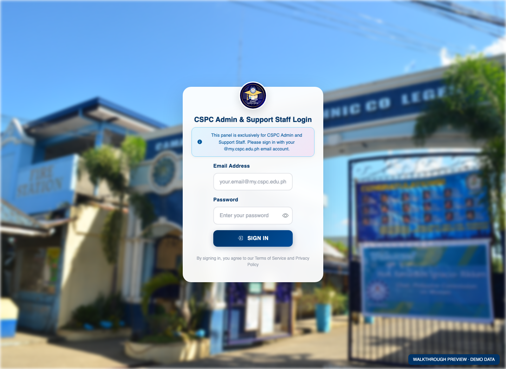
Template: app/Views/login/index.phpCheck the dashboard
Review total items, claimed items, pending reviews, and returns. Use weekly activity and recent activity to decide what needs attention.
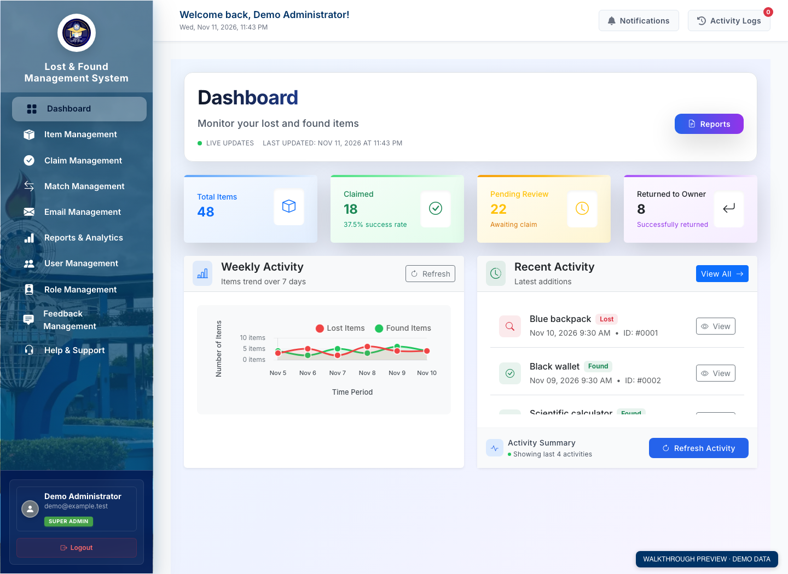
Template: app/Views/dashboard/home.phpManage lost and found items
Review page-level counts, then search all reports by title, description, location, or reporter. Combine category, type, and status filters. Select Preview to inspect photos and report details without leaving the list; use Open full details for the complete record. All preview records and illustrations are fictional.
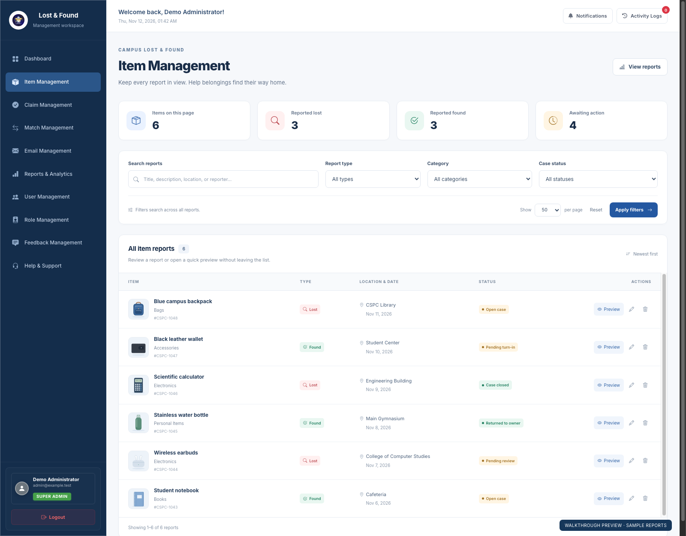
Quick preview — browse the photo gallery, check the report details, and close with Escape to return to the list.
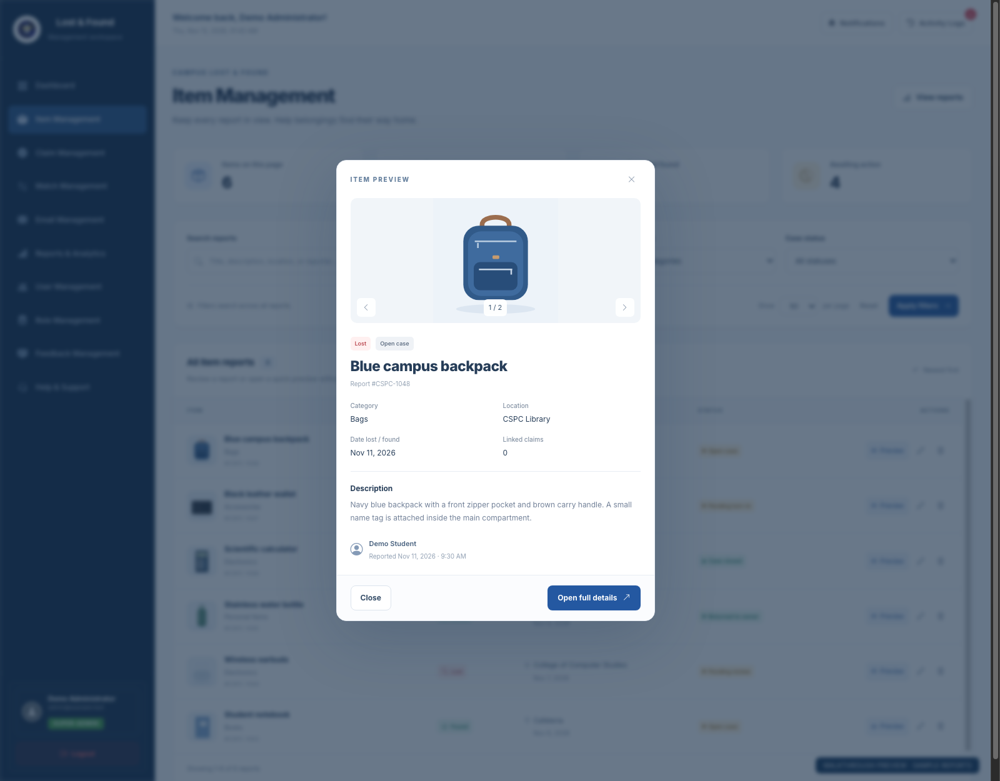
Template: app/Views/dashboard/items.php · Updated November 12, 2026Review potential matches
Open Match Management. Compare lost and found item descriptions, locations, and the match score. Open a match to review it before approving, rejecting, or resolving the case. A score is a review aid, not proof of ownership.
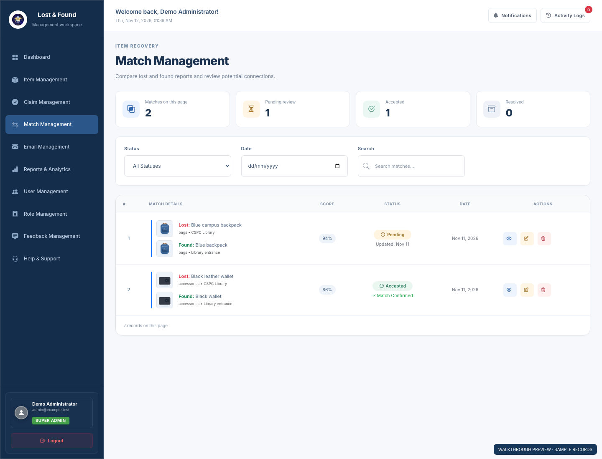
Template: app/Views/matches/index.phpReview ownership claims
Open Claim Management. Review the claimant, linked items, supporting information, and claim status before taking an available action.
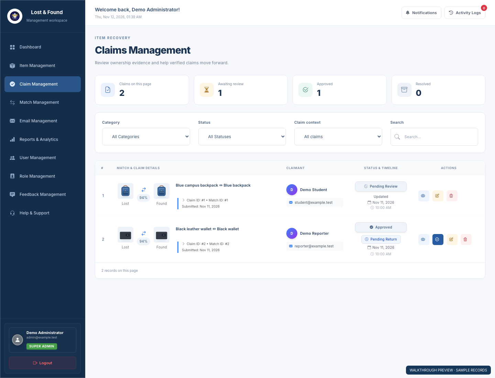
Template: app/Views/claims/index.phpReview reports and analytics
Open Reports & Analytics. Inspect item totals, claim success, average claim time, and category breakdowns. Use the filters and export controls to prepare a report.
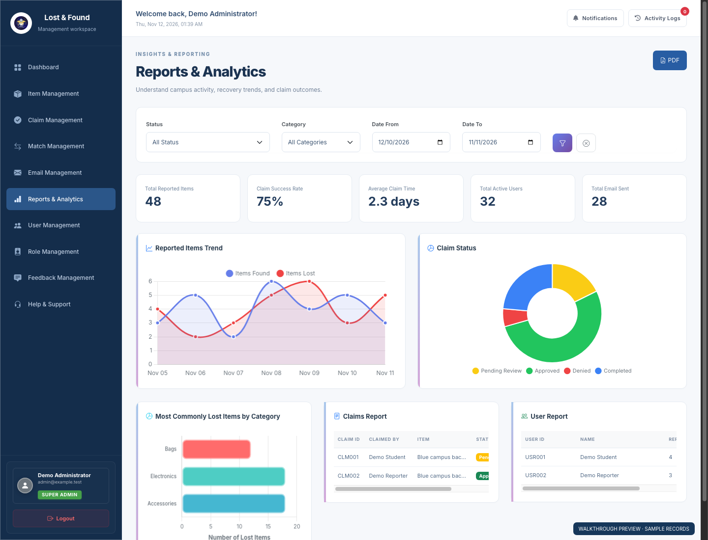
Template: app/Views/reports/index.phpManage users
Open User Management. Search by name or email and filter by department or status. Review account status, two-factor authentication, and report counts, then use the view, edit, suspend, or delete controls for an account.
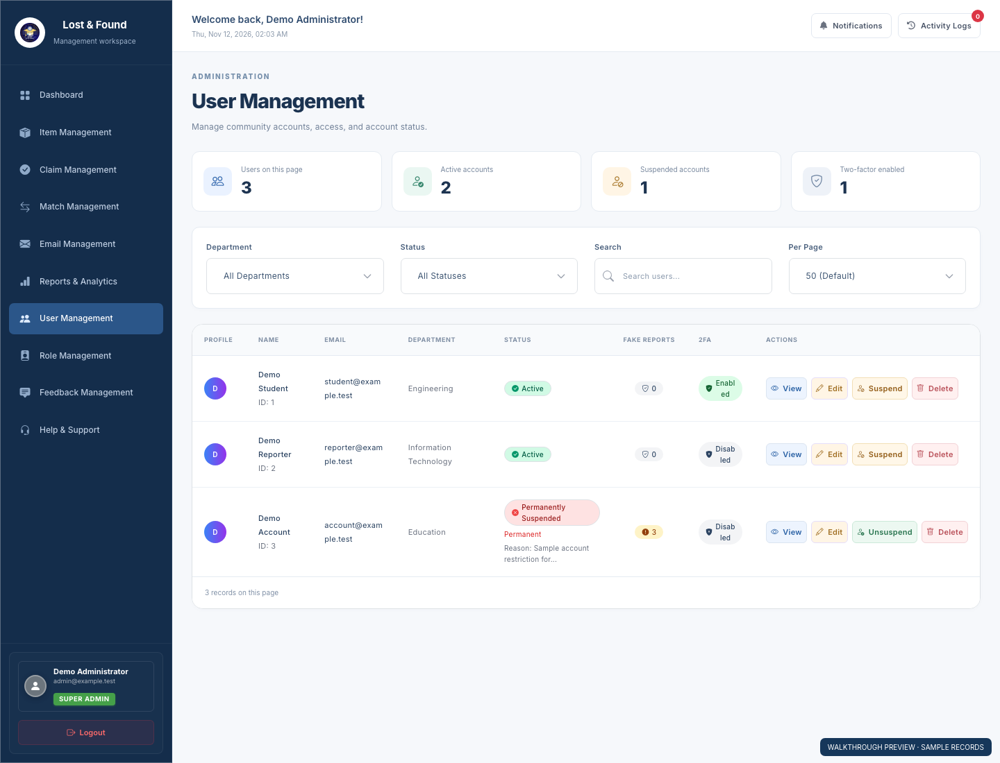
Template: app/Views/users/index.phpManage roles
Open Role Management. Search the administrative accounts and filter by role. Review the super admin, admin, and staff assignments. Open an account to inspect or edit it; the super admin can use Add New Role to create an administrative account. Available controls depend on the signed-in role.
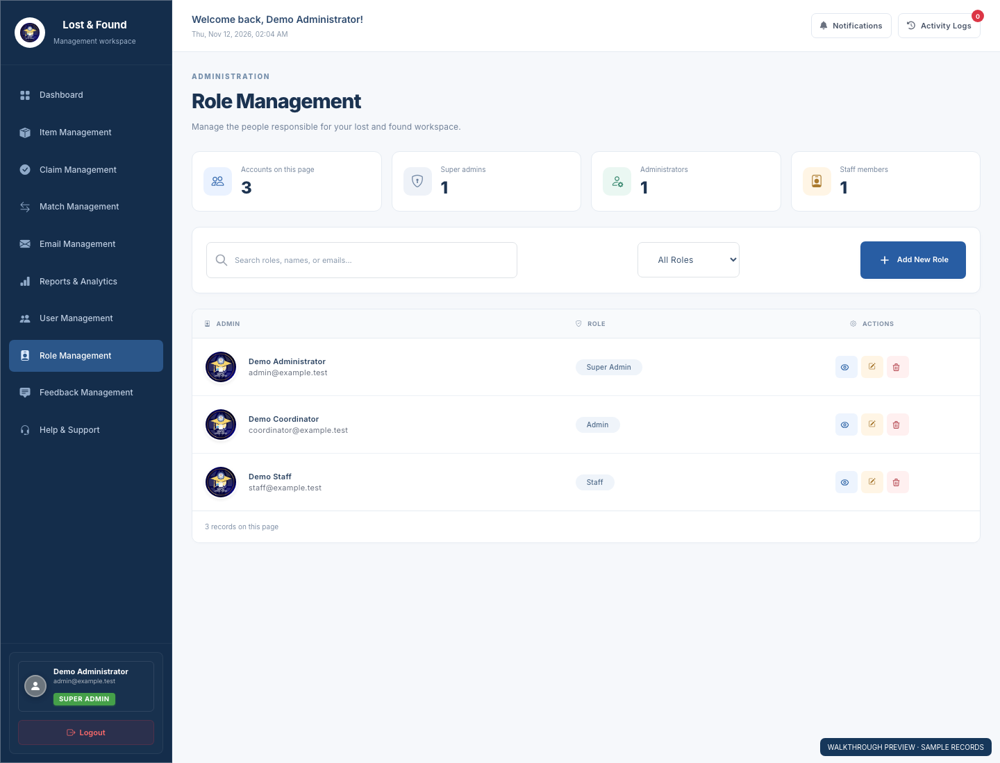
Template: app/Views/admin_role/index.phpManage feedback
Open Feedback Management. Check total feedback, pending entries, addressed entries, and average rating. Filter by status, type, or rating, or search the list. Open an entry to read its details or use Respond to reply.
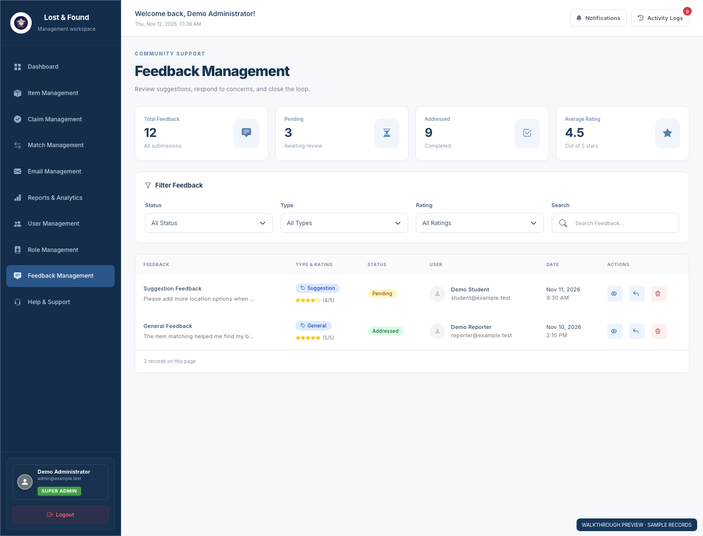
Template: app/Views/feedback/index.phpManage help & support
Open Help & Support. Review total, open, and in-progress tickets, then check the recent requests. Select View All Tickets to open ticket management, where staff can inspect a request, reply, and update its status.
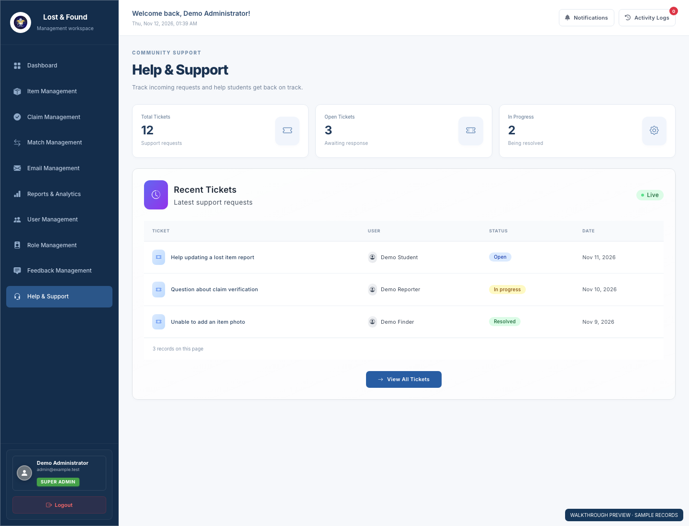
Template: app/Views/help_support/dashboard.phpEmail management
Review delivery totals, filter by status, search recent messages, and open delivery logs. Existing email actions are preserved; no messages were sent during preview checks.
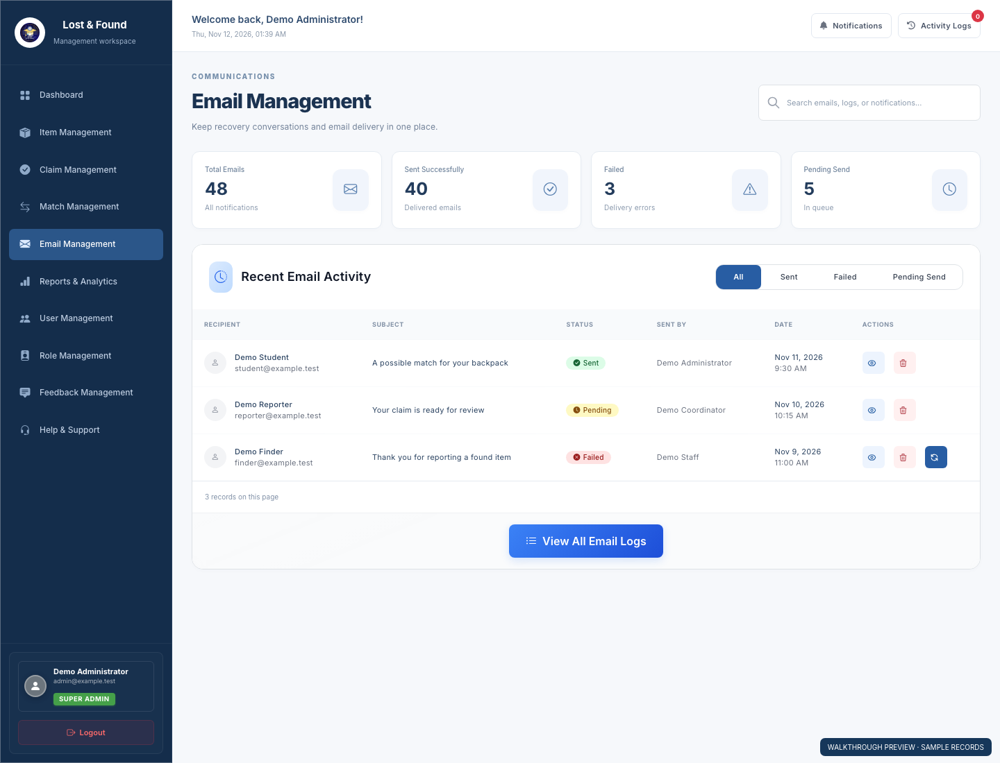
Template: app/Views/emails/index.php